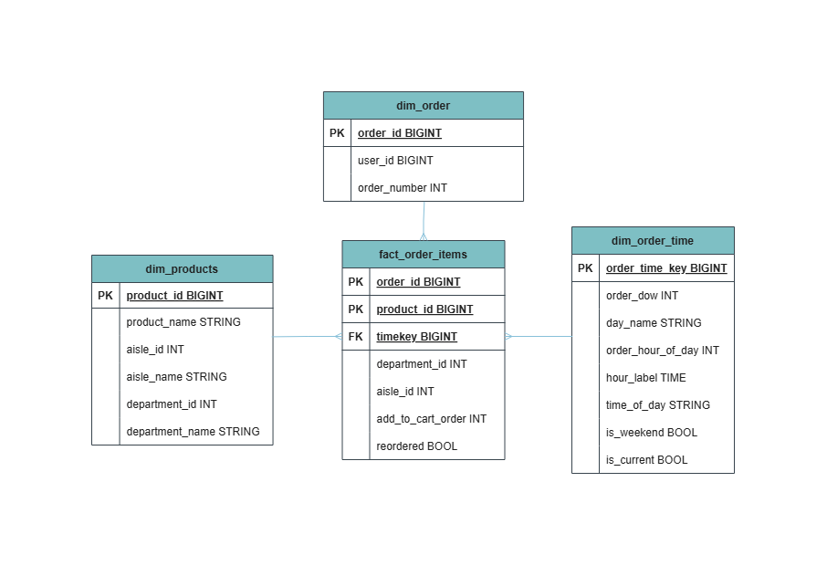

Case Study | Instacart Dimensional Warehouse
Turning raw grocery-order data into clean, reliable, and analytics-ready Delta tables through a Databricks medallion pipeline.
Project Overview
This project builds a full data warehouse for the Instacart dataset. Source CSV files are ingested into Delta tables, cleaned and integrated, then modeled into a Gold-layer star schema for reusable analytics.
The pipeline is organized into Source, Bronze, Silver, Gold, Analytics, and Tests layers so that ingestion, transformation, reporting, and quality checks have clear responsibilities.
Business or Analytical Question
How can grocery-order data be transformed into a dependable model that helps answer:
- Which products and departments are ordered most often?
- When is order activity highest?
- Which products are frequently reordered?
- How does product behavior differ by aisle or department?
Architecture Diagram
Data moves through a medallion architecture, with tests and release checks protecting the path from source data to business-ready outputs.
Instacart CSV files
Raw Delta ingestion
Clean, cast, validate
Fact + dimensions
Views + questions

Your Role and Collaboration
This was built as a collaborative FTW Data Engineering project on GitHub. The repository supports shared development through version-controlled SQL, documentation, pull requests, automated validation, and reproducible deployment steps.
The collaboration model keeps transformation logic, tests, documentation, and deployment configuration reviewable by the wider team.
Tools and Technologies
Data Model and Quality Approach
The Gold layer centers on fact_order_items, where each row represents a
product recorded within a customer order. It connects to dimensions for orders, time,
products, aisles, and departments.
Fact table
Order-item activity keyed by (order_id, product_id).
Dimensions
Order, time, product, aisle, and department context for analysis.
Validation
Checks for keys, nulls, duplicates, relationships, reruns, and business results.
Key Outputs or Findings
- A reusable Gold-layer star schema for reporting.
- Analytics views for product, order, time, department, aisle, and reorder analysis.
- Query-ready outputs for order timing, basket size, and reorder behavior.
- Repeatable Delta merges and release-quality validation checks.
Example Analysis
The model supports exploration of order volume by day and hour, average items per order, and the rate at which products are reordered.

Explore the code, documentation, tests, and deployment workflow:
View Collaborative GitHub Repository